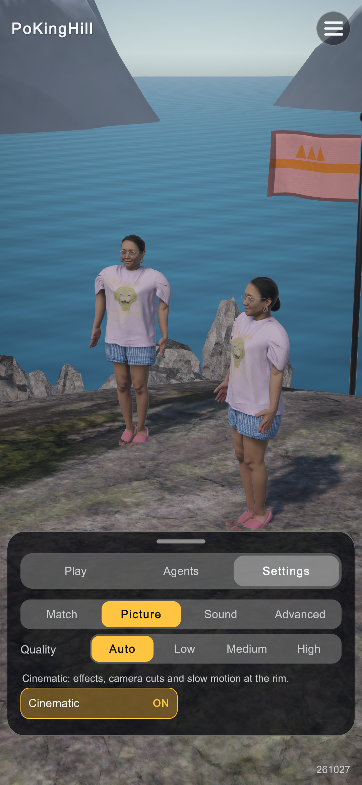
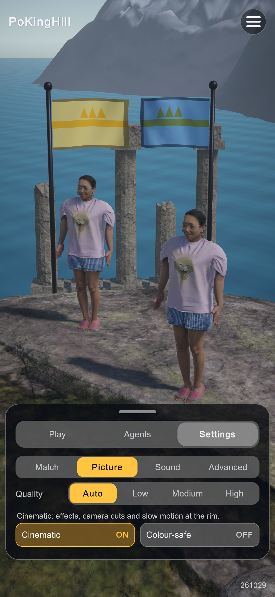
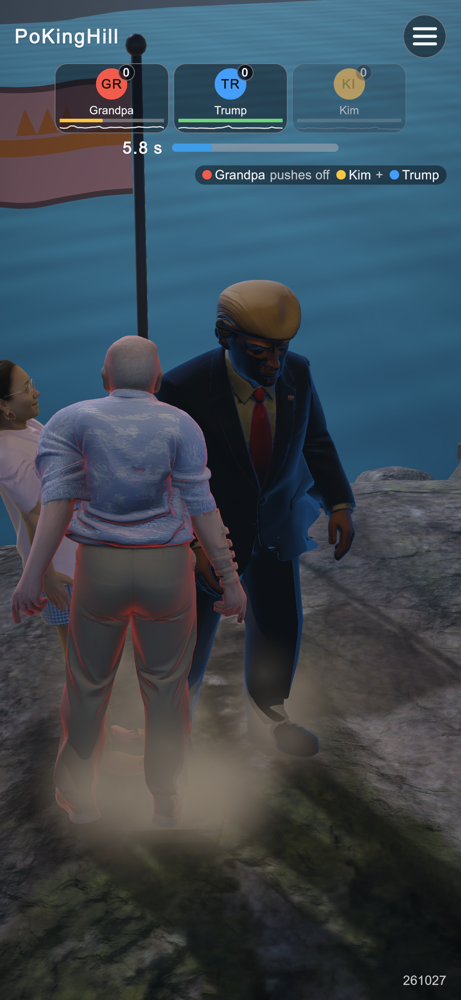
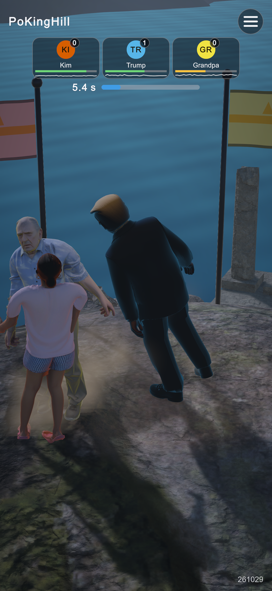
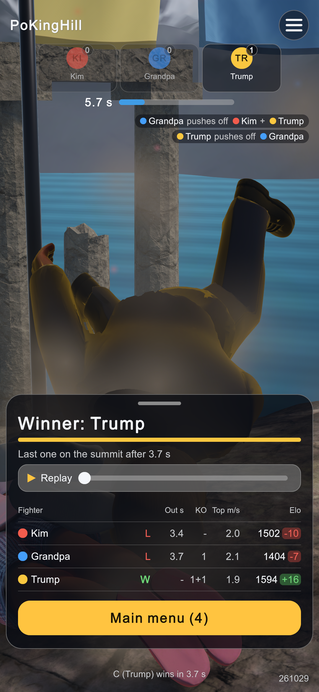

Captured in the editor's Game view at 1080x2340 (19.5:9). "Before" is the HUD before these edits. The 3D picture differs from shot to shot because each round starts from a new layout and time of day.


MatchDirector.SeatColors switches to the Okabe-Ito palette, which people with any kind of colour vision can tell apart. Badges, feed dots, the results table and the fighters' rim all use it.

BroadcastCamera.FollowSeat: the camera orbits that fighter until the fighter is out, the round ends or
the badge is tapped again, and the badge gets an accent border (.badge.followed). A badge in the EDGE state
now throbs (scale 1.06 at 3 Hz, .badge.edge.pulse).
MatchFlowTests.MenuFightResultMenu.HudView.LayoutProblems() now flags any visible button or badge smaller than 48 screen pixels either way
(HudView.MinTapPx). At 1080x2340 today, segment buttons are 237x78 px, tabs 315x92 and icon buttons 102x102.HudLayoutTests lays every screen out on 5 phones (1080x1920, 1080x2340, 1170x2532, 1440x3200,
1080x2520), up from 3.48 px is a floor against regressions, not the Material 48 dp guideline. On a 1080-wide phone, 78 px is about 30 dp, so the segment buttons are still below that guideline.